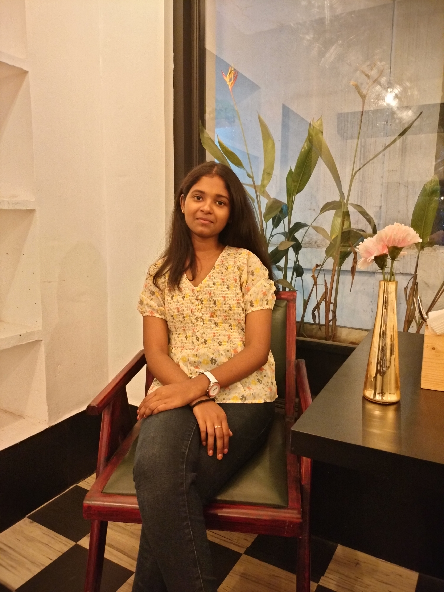

Tejaswi Domada

Objective
A highly organized and motivated individual looking for a responsible position to utilize and enhance my
skills while making a significant contribution to the success of the company.
Education
-
Btech in Computer Science - CVR College of Engineering (2020 - Present)
Cummulative Grade - 9.07 CGPA
-
Senior Secondary (XII) MPC - Narayana Junior College (2018 - 2020)
Aggregate Percentage - 96.8 %
-
Secondary (X) - Sri Vignana Vardhani High School (2018)
Cummulative Grade - 9.8 CGPA
Skills
-
Programming Languages - Java, C, Python
-
Database Systems - MySQL, MongoDB
-
Version Management - GIT
-
Web Development - HTML, CSS, JavaScript, Angular
Projects
-
Paddy and Apple Crop Disease Detection
-
A Micro-Project based on image processing in the detection of leaf disease using deep learning
techniques.
-
Image Based Species Recognition
-
This project employs Convolutional Neural Networks (CNNs) to analyze images of various species
(cats and dogs) and automatically identify their respective species.
Certifications and Cocurriculars
- Java Basic and Advanced Programming - Ebox
- Core Committee Member of the College UHV club - Organized various events and sessions and
represented the college Universal Human Values club.
- Organized a Webathon during the college Technical Fest.
Others